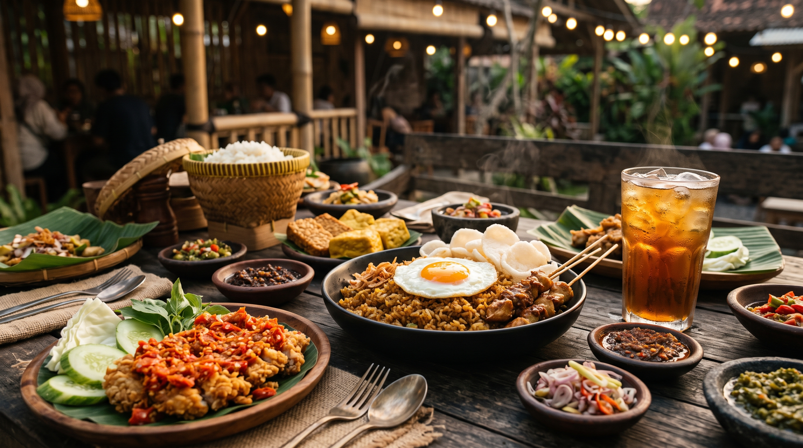

PEDAS NAMPOL
PEDAS NAMPOLNasi Ayam Geprek Gondes
Rp 30.000
Nasi pulen hangat, ayam crispy geprek dengan ulegan sambal rawit merah, timun segar.
Kuliner ayam goreng & geprek khas racikan Pak Gondes di Grogol, Jakarta Barat. Sambal uleg pedas mantap, porsi mengenyangkan, dan harga ramah kantong mahasiswa & keluarga!

Paling sering dipesan oleh mahasiswa dan warga Grogol. Daging ayam empuk bumbu meresap berpadu lauk hangat khas Nusantara.
PEDAS NAMPOLRp 30.000
Nasi pulen hangat, ayam crispy geprek dengan ulegan sambal rawit merah, timun segar.
 KREMES GURIH
KREMES GURIHRp 30.000
Ayam goreng bumbu kuning gurih, taburan kremes renyah, dan sambal khas racikan.
 MANIS GURIH
MANIS GURIHRp 36.000
Ayam 1/4 ekor ungkep manis gurih, kremesan kriuk, lalapan selada dan sambal terasi.
 KEJU LUMER
KEJU LUMERRp 38.000
Ayam geprek krispi pedas gurih dengan keju mozarella melimpah di atasnya.
Berawal dari kecintaan Pak Gondes meracik bumbu rempah ayam tradisional dan sambal korek pedas segar di kawasan Grogol Petamburan. Setiap potong ayam dimarinasi bumbu rempah alami, digoreng pada suhu yang pas sehingga kulit renyah dan dagingnya tetap empuk berjus.
Tonton langsung proses di balik setiap porsi ayam Pak Gondes.
Video profil Ayam Pak Gondesss
Hanya 5 menit dari kampus Trisakti dan Mall Ciputra Jakarta.
Jl. Dr. Susilo Raya No. 42
Grogol Petamburan, Jakarta Barat 11450
Senin - Minggu (tanpa libur)
10.00 - 22.00 WIB
Jam ramai: 12.00 - 14.00 & 18.30 - 20.30